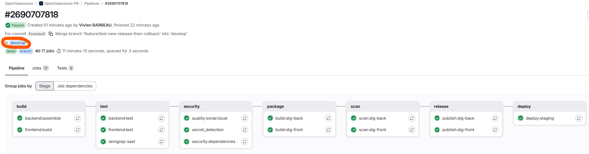
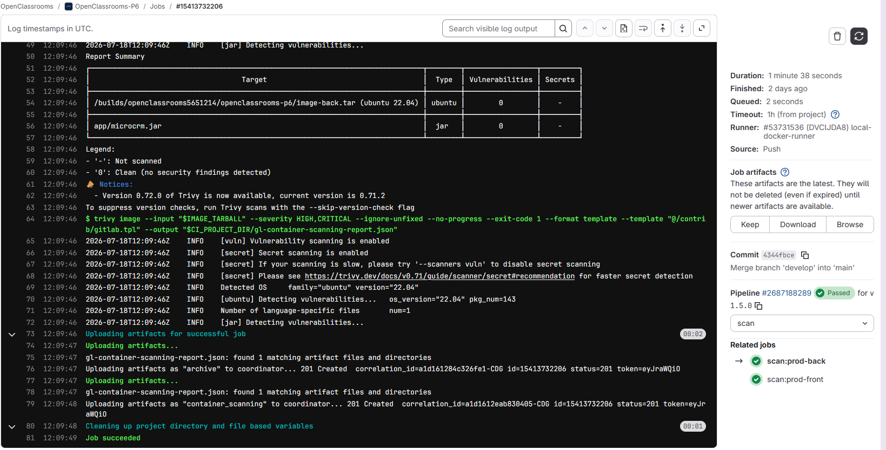
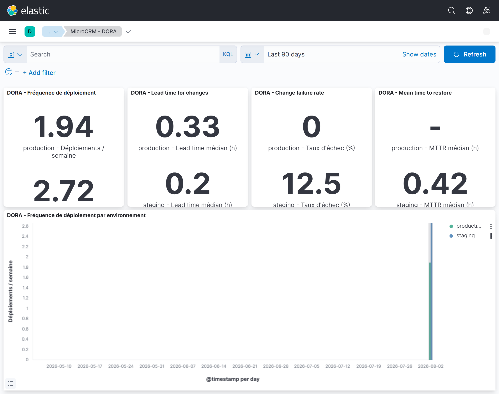

2026
Spécialisation en cours
Expert DevOps — RNCP 7
OpenClassrooms. Automatisation, déploiement continu, conteneurisation, orchestration, Infrastructure as Code et cloud AWS.
Nantes, France
Développeur Drupal/PHP avec près de 4 ans d’expérience, je me spécialise aujourd’hui en DevOps pour relier code, qualité, sécurité et infrastructure.
Mon parcours
Spécialisation en cours
OpenClassrooms. Automatisation, déploiement continu, conteneurisation, orchestration, Infrastructure as Code et cloud AWS.
Adimeo · Nantes
Conception de projets Drupal complexes, modules sur mesure, traitements asynchrones, intégrations d’API, recherche à facettes et déploiements CI/CD.
Projet phare : refonte de metropole.nantes.fr, 5 000+ contenus3W Academy · Nantes
Formation intensive full-stack et obtention du titre RNCP niveau III de Développeur web.
Projet DevOps phare
Industrialisation complète d’une application Angular / Spring Boot : construire, tester, sécuriser, publier, déployer et observer avec une chaîne reproductible.
Voir le dépôt GitLabPipeline GitLab CI modulaire, staging automatique, production manuelle, versioning sémantique et rollback Helm.

SAST, détection de secrets, SonarCloud et gate Trivy bloquant les images vulnérables avant leur publication.

Machine préparée avec Ansible, plateforme déclarée avec Terraform et Helm, logs ELK et tableau de bord DORA.

Projets & open source
Android · Web · Open data
Application Android et site web comparant les prix de plus de 9 000 stations en France à partir de données gouvernementales.
Drupal · Module contribué
Module open source améliorant l’expérience des champs d’autocomplétion natifs de Drupal, publié sur Drupal.org.
Compétences
Drupal, PHP, JavaScript, intégration web, API, qualité et accessibilité.
GitLab CI/CD, Docker, SonarCloud, Trivy, SAST et gestion des releases.
Kubernetes, Helm, Terraform, Ansible, Linux et fondamentaux AWS.
Elasticsearch, Logstash, Kibana, Filebeat, alerting et métriques DORA.
Recommandations
Mes lettres de recommandation contiennent des coordonnées personnelles. Pour protéger leurs auteurs, les originaux ne sont pas publiés en accès libre.
Demander les recommandationsDonnées protégées
Les versions destinées au portfolio seront converties en images et expurgées des numéros de téléphone, adresses et signatures avant publication.
Contact
Je suis basé à Nantes et ouvert aux échanges autour de nouveaux projets.